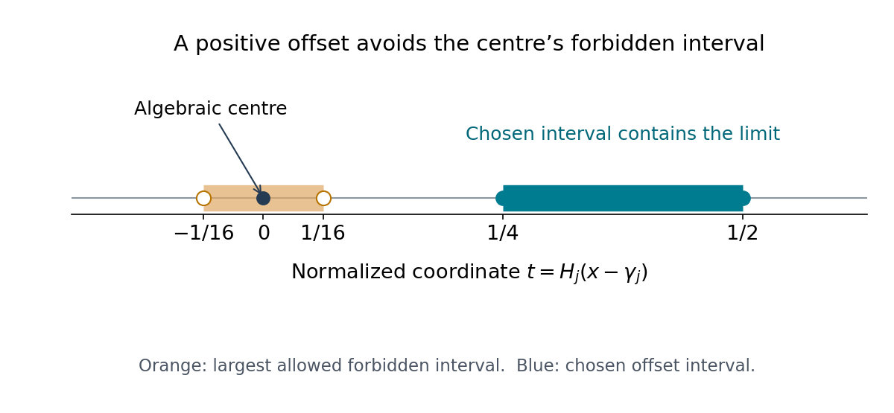

Mahler's classification of transcendental numbers
Written and self-checked by GPT-6.1 Sol (OpenAI), Codex, Ultra setting, October 2026. Original exposition, figure and code are CC0. No human or independent review is claimed. Prerequisites are identified where used.
Roth's theorem fixes the rational approximation exponent of an algebraic irrational. For transcendental numbers, rational approximation is only the first of many tests. A number may make integer polynomials of degree two exceptionally small while admitting no exceptional rational approximations. Mahler's classification records all these polynomial-value exponents and asks how they grow with the degree.
We use the naive polynomial height and Mahler measure proved in Heights of algebraic numbers. The complete approximation proof in Theorem 12.1 of Roth's theorem and its consequences distinguishes the algebraic case. Throughout, \(\xi\) may be real or complex; statements about real Lebesgue measure say so explicitly.
1. Polynomial-value exponents
For an integer \(n\ge1\) and a real \(H\ge1\), put
\[ \omega_n(H,\xi)= \min\{|P(\xi)|:P\in\mathbb Z[X],\ \deg P\le n,\ H(P)\le H,\ P(\xi)\ne0\}. \tag{13.1} \]There are finitely many eligible polynomials, and the constant polynomial one is eligible, so this minimum exists and belongs to \((0,1]\). Define
\[ W_n(\xi)=\limsup_{H\to\infty} \frac{-\log\omega_n(H,\xi)}{\log H}, \qquad w_n(\xi)=\frac{W_n(\xi)}n,\qquad w(\xi)=\limsup_{n\to\infty}w_n(\xi). \tag{13.2} \]Mahler's own notation, recalled in Amou and Bugeaud's survey, §3, writes \(\omega_n\) for the unnormalized \(W_n\) and \(\omega\) for \(w\). Many modern accounts call the unnormalized \(W_n\) by the name \(w_n\). We keep both symbols visible. In particular, \(W_n\) is nondecreasing in \(n\); the normalized \(w_n\) need not be.
For a transcendental \(\xi\), \(W_n\) is equivalently the supremum of exponents \(v\ge0\) for which
\[ 0<|P(\xi)|<H(P)^{-v} \tag{13.3} \]holds for infinitely many integer polynomials of degree at most \(n\). To justify the equivalence, take any exponent strictly below the limsup and polynomials attaining the minima along its defining heights. Their own heights are no larger, so the same strict inequality holds. Their heights must be unbounded when their values tend to zero, since a bounded coefficient set is finite and all its nonzero values have positive minimum. Conversely a sequence of unbounded polynomial heights in (13.3) supplies the limsup lower bound. The value \(v=0\) is interpreted by taking positive exponents when establishing a nonzero bound.
Mahler's four classes are:
- \(A\): \(w(\xi)=0\).
- \(S\): \(0<w(\xi)<\infty\).
- \(T\): \(w(\xi)=\infty\), but every \(W_n(\xi)\) is finite.
- \(U\): some \(W_n(\xi)\) is infinite.
If one \(W_n\) is infinite, all subsequent ones are infinite; so the last case does imply \(w=\infty\). A \(U\)-number has a type \(m\), the smallest degree with \(W_m=\infty\), and is called a \(U_m\)-number.
Proposition 13.1. The \(A\)-numbers are exactly the algebraic numbers
Proof. Let \(\alpha\) have algebraic degree \(a\), and choose a positive integer \(A\) with \(A\alpha\) integral. For \(P\in\mathbb Z[X]\) of degree at most \(n\) and \(P(\alpha)\ne0\), the element \(A^nP(\alpha)\) is integral. Its nonzero norm is an integer, hence has modulus at least one. At each of the other \(a-1\) conjugates, the evaluation is bounded by \(C_{\alpha,n}H(P)\). Therefore
\[ |P(\alpha)|\ge c_{\alpha,n}H(P)^{-(a-1)}. \]It follows that \(W_n(\alpha)\le a-1\) for every \(n\), and \(w(\alpha)=0\). Polynomials vanishing at \(\alpha\) are excluded in (13.1), as the norm argument requires.
Now suppose \(\xi\) is transcendental. Consider the \((M+1)^{n+1}\) values of polynomials whose coefficients range from zero to \(M\). For real \(\xi\), these values lie in an interval of length \(C_{\xi,n}M\). Ordering them gives two with difference at most \(C'_{\xi,n}M^{-n}\). Their difference is a nonzero integer polynomial of height at most \(M\), whose value is nonzero by transcendence. Thus \(W_n(\xi)\ge n\).
For nonreal \(\xi\), the values lie in a square of side \(C_{\xi,n}M\) in the complex plane. Divide it into fewer than \((M+1)^{n+1}\) equal squares, with side \(O(M^{-(n-1)/2})\). Two values in one square give \(W_n(\xi)\ge(n-1)/2\), for \(n\ge2\). The elementary bounded number of values in any fixed coefficient range ensures the heights of these difference polynomials tend to infinity along a subsequence. Consequently \(w(\xi)\ge1\) for real \(\xi\), and \(w(\xi)\ge1/2\) for nonreal \(\xi\). Neither is an \(A\)-number. \(\square\)
The inequalities just obtained also explain the normalization: a typical real exponent has size \(n\), so dividing by \(n\) gives a degree-independent scale.
2. Products and polynomial heights
For a complex polynomial \(P=a\prod_j(X-\alpha_j)\), let \(M(P)=|a|\prod_j\max(1,|\alpha_j|)\), with the evident convention for constants.
Lemma 13.2. Product heights
If \(P=\prod_{i=1}^k P_i\ne0\) has total degree \(n\), then
\[ \prod_i H(P_i)\le2^n\sqrt{n+1}\,H(P). \tag{13.4} \]Proof. Lesson 2 proves \(H(Q)\le2^{\deg Q}M(Q)\), \(M(Q)\le\sqrt{\deg Q+1}\,H(Q)\), and multiplicativity of \(M\). Multiply the first bound for all factors, use \(\sum\deg P_i=n\), and then apply the second bound to \(P\). Nonzero constants are included exactly in multiplicativity. \(\square\)
This bound is useful when replacing a polynomial with one of its irreducible factors. It is not an assertion that the largest coefficient of a product equals the product of the largest coefficients: coefficient cancellation can prevent that equality.
3. Why algebraic dependence preserves the class
The precise hypothesis matters. Two transcendental numbers are algebraically dependent if a nonzero polynomial \(Q\in\mathbb Q[X,Y]\) vanishes on them. An algebraic number and a transcendental number are also algebraically dependent in the usual definition: a polynomial in the algebraic coordinate alone suffices. They plainly cannot have the same Mahler class, by Proposition 13.1.
Theorem 13.3. Mahler's invariance theorem
Algebraically dependent transcendental numbers have the same class \(S,T\), or \(U\). More generally, two numbers each algebraic over the field generated by the other have the same class, including class \(A\).
Proof. For transcendental \(\xi,\eta\), choose an irreducible integer relation \(Q(\xi,\eta)=0\). It depends on both variables: otherwise its vanishing would make one number algebraic. Put \(k=\deg_XQ\ge1\), \(l=\deg_YQ\ge1\). Since \(\eta\) is transcendental, the leading \(X\)-coefficient \(a_k(\eta)\) is nonzero. Let \(\xi_1=\xi,\ldots,\xi_k\) be its complex roots, with multiplicity, after specializing \(Y=\eta\).
Each \(\xi_i\) is transcendental. If \(\xi_i=\beta\) were algebraic, \(Q(\beta,\eta)=0\) would force \(Q(\beta,Y)\) to vanish identically. The minimal polynomial of \(\beta\) would then divide every coefficient of \(Q\), viewed as a polynomial in \(Y\). Irreducibility would force \(Q\) to depend only on \(X\), a contradiction.
For \(P\in\mathbb Z[X]\setminus\{0\}\) of degree \(s\le n\), form
\[ R_P(Y)=\operatorname{Res}_X(Q(X,Y),P(X)). \]Its Sylvester determinant gives
\[ \deg R_P\le ln,\qquad H(R_P)\le C_nH(P)^k, \qquad 0<|R_P(\eta)|\le C_nH(P)^{k-1}|P(\xi)|. \tag{13.5} \]For the height bound, a determinant term contains exactly \(k\) coefficients of \(P\); the other factors are coefficients of the fixed \(Q\), and the finite coefficient-convolution and determinant counts depend only on \(n,Q\). The degree bound follows from at most \(s\) coefficients of \(Q\), each of \(Y\)-degree at most \(l\). The evaluation formula is \(R_P(\eta)=a_k(\eta)^s\prod_{i=1}^kP(\xi_i)\); every factor is nonzero, and the other \(k-1\) factors are bounded by \(C_nH(P)\).
If \(\mu<W_n(\xi)\) and \(\mu>k-1\), choose polynomials with \(|P(\xi)|<H(P)^{-\mu}\) and unbounded heights. For every \(\nu<(\mu-k+1)/k\), (13.5) gives \(|R_P(\eta)|<H(R_P)^{-\nu}\) eventually. Their values tend to zero, so their heights are unbounded as well, because \(\eta\) is transcendental. Taking limits yields
\[ W_{ln}(\eta)\ge \frac{W_n(\xi)-k+1}{k}, \tag{13.6} \]where a negative right side is simply a trivial lower bound. The same conclusion holds for infinite \(W_n\), by taking arbitrarily large \(\mu\). Interchanging the coordinates gives the symmetric inequality.
Thus an infinite fixed-degree exponent transfers in both directions, preserving class \(U\). If all fixed-degree exponents are finite, (13.6), divided by \(ln\) and followed along a subsequence, gives
\[ w(\eta)\ge w(\xi)/(kl). \]The symmetric inequality gives \(w(\xi)\ge w(\eta)/(kl)\). These preserve finiteness or infinitude of \(w\); its positivity is already Proposition 13.1. Hence they preserve \(S\) and \(T\) as well.
For the more general statement, if either number is algebraic then mutual algebraicity makes the other algebraic, hence both are \(A\). Otherwise mutual algebraicity gives a nontrivial relation between the two transcendental numbers, to which the proved statement applies. \(\square\)
In particular \(\xi\) and \(\xi^2+1\) have the same class: for transcendental \(\xi\) their relation is \(Y-X^2-1=0\), and for algebraic \(\xi\) both are \(A\). The types of \(U\)-numbers need not be equal under arbitrary algebraic dependence; the theorem preserves the four classes.
4. Rational approximation and \(U_1\)-numbers
For a real irrational \(\xi\), let \(\mu(\xi)\) be the supremum of \(\mu\) such that \(|\xi-p/q|<q^{-\mu}\) holds for infinitely many reduced rationals. Then
\[ W_1(\xi)=\mu(\xi)-1. \tag{13.7} \]Proof. An approximation in a bounded neighbourhood has \(H(qX-p)\asymp q\) and \(|q\xi-p|=q|\xi-p/q|\), giving the lower bound with any slightly smaller exponent. Conversely a linear polynomial of sufficiently small nonzero value has nonzero \(X\)-coefficient, say \(q\), and its rational zero \(p/q\) satisfies \(|\xi-p/q|\le1/|q|\). Thus \(H(qX-p)\asymp|q|\), and division by \(|q|\) gives the opposite exponent inequality. Removing a common divisor of \(p,q\) only improves both height and the small-value bound. The reduced denominators are unbounded on any sequence of values tending to zero: finitely many bounded-denominator zeros lie in that neighbourhood, and multiples of a fixed nonzero polynomial increase its value. These observations justify both limiting implications. \(\square\)
Consequently a real irrational is a \(U_1\)-number exactly when it is a Liouville number. In particular every Liouville number is a \(U\)-number. For
\[ L=\sum_{j=1}^{\infty}10^{-j!}, \tag{13.8} \]the truncation \(r_j=p_j/q_j\), \(q_j=10^{j!}\), is reduced for \(j\ge2\), and
\[ 0<L-r_j<2q_j^{-(j+1)}. \tag{13.9} \]The last term of its numerator is one modulo both two and five. The first omitted term is \(q_j^{-(j+1)}\), and the later factorial exponents give a tail smaller than twice that term. These inequalities first exclude rationality by the nonzero rational-difference bound, and then supply arbitrarily large rational approximation exponents. Thus \(L\) is a \(U_1\)-number.
5. A complete construction of every \(U_m\) type
LeVeque proved that every positive integer occurs as a \(U\)-type. The following construction proves that existence assertion directly and also controls the lower degrees.
Theorem 13.4. Adding a factorial-gap series
Let \(\theta\) be a real algebraic integer of degree \(m\), and let \(L\) be (13.8). Then \(\xi=\theta+L\) is a \(U_m\)-number.
Proof. It is transcendental: algebraicity would make \(L=\xi-\theta\) algebraic. Put \(\alpha_j=\theta+r_j\), of exact degree \(m\), and let \(f\in\mathbb Z[X]\) be the monic minimal polynomial of \(\theta\). The integer polynomial
\[ P_j(X)=q_j^m f(X-r_j) \]has degree \(m\), height at most \(Cq_j^m\), and
\[ 0<|P_j(\xi)|\le Cq_j^m|L-r_j| \le C' q_j^{m-j-1}. \]The coefficient bound follows by the binomial formula and the boundedness of \(r_j\); the value bound follows by a fixed derivative bound near \(\theta\). Its leading coefficient is \(q_j^m\), so the heights tend to infinity. Given any exponent \(v\), the final bound is smaller than \(H(P_j)^{-v}\) for all sufficiently large \(j\). Thus \(W_m(\xi)=\infty\).
Fix \(1\le n<m\). We prove a finite bound for \(W_n\), uniformly over every nonzero integer \(P\) of degree at most \(n\) and height \(H\). Its value at \(\alpha_j\) is nonzero, because \(\alpha_j\) has degree \(m\). The element \(q_j^nP(\alpha_j)\) is integral in \(\mathbb Q(\theta)\). The unscaled conjugate values \(P(\theta_i+r_j)\) are bounded by \(C_nH\), uniformly in \(j\), since the \(r_j\) lie in a bounded interval. Taking the norm of the integral element, with its full factor \(q_j^{mn}\), gives
\[ |P(\alpha_j)|\ge c_nq_j^{-mn}H^{-(m-1)}. \tag{13.10} \]On the bounded real interval containing \(\xi\) and all \(\alpha_j\), the coefficient bound gives \(|P'|\le C_n'H\). By (13.9),
\[ |P(\xi)-P(\alpha_j)| \le 2C_n'H/q_{j+1}. \tag{13.11} \]Choose a fixed \(C_0\ge\max(1,4C_n'/c_n)\). For a sufficiently large \(H\), let \(j\ge2mn+1\) be the least index with
\[ q_{j+1}\ge C_0H^m q_j^{mn}. \tag{13.12} \]Such an index exists since \(q_{j+1}=q_j^{j+1}\). As \(H\to\infty\), this least index tends to infinity, so its predecessor is also admissible eventually. Minimality and \(q_j=q_{j-1}^{j}\) then give
\[ q_j<C_0H^m q_{j-1}^{mn}=C_0H^m q_j^{mn/j}, \qquad q_j^{1-mn/j}<C_0H^m. \]Since \(j>2mn\), it follows that \(q_j<(C_0H^m)^2\). Equations (13.10)–(13.12) give
\[ |P(\xi)|\ge\tfrac12c_nq_j^{-mn}H^{-(m-1)} \ge c_n''H^{-(2m^2n+m-1)}. \tag{13.13} \]This holds for every such polynomial at every sufficiently large height, and the constants depend only on \(m,n,\theta\). Therefore \(W_n(\xi)\le2m^2n+m-1<\infty\) for every \(n<m\). Together with \(W_m=\infty\), this proves exact type \(m\). For \(m=1\) there are no smaller positive degrees to check. \(\square\)
For example \(2^{1/m}+L\) has type \(m\), since \(X^m-2\) is Eisenstein at two. In particular \(L\) is \(U_1\), while \(\sqrt2+L\) is \(U_2\). They are algebraically dependent by \((X-Y)^2-2=0\), illustrating that the \(U\)-class is invariant although its type changes.
6. Why almost every number is an \(S\)-number
The classification asks for a bound uniform in the degree after normalization. Proving only that each \(W_n\) is finite would exclude \(U\)-numbers but could still allow \(T\)-numbers. We prove the stronger bound \(W_n\le4n\) almost everywhere. This elementary estimate is enough to identify the class, although it is weaker than the sharp metric theorem.
Lemma 13.5. A small value is close to a root
Let \(Q\in\mathbb Z[X]\) be irreducible of degree \(r\ge1\) and height \(H\). There is a constant \(C_r\), independent of \(Q\), such that every complex \(z\) with \(|Q(z)|<H^{-4r}\) lies within \(C_rH^{-2r-2}\) of a root of \(Q\).
Proof. Write \(Q=a\prod_{i=1}^r(X-\alpha_i)\). In characteristic zero its roots are distinct. For \(r=1\), its derivative has modulus \(|a|\ge1\), and the assertion follows at once from the exact linear evaluation formula.
For \(r\ge2\), put \(u_i=\max(1,|\alpha_i|)\) and \(M=M(Q)=|a|\prod_i u_i\). Since \(|\alpha_i-\alpha_j|\le2u_i u_j\),
\[ |Q'(\alpha_j)|\le2^{r-1}M u_j^{r-2},\qquad \prod_{j\ne i}|Q'(\alpha_j)| \le2^{(r-1)^2}M^{2r-3}|a|^{-(r-2)}. \]The resultant \(\operatorname{Res}(Q,Q')\) is a nonzero integer. Its root formula therefore gives
\[ 1\le |a|^{r-1}\prod_j|Q'(\alpha_j)| \le2^{(r-1)^2}|a|M^{2r-3}|Q'(\alpha_i)|. \]Using \(|a|\le H\) and \(M\le\sqrt{r+1}H\), we obtain \(|Q'(\alpha_i)|\ge c_rH^{-(2r-2)}\) for every root.
Choose a root \(\alpha_i\) nearest to \(z\). For every other root, \(|\alpha_i-\alpha_j|\le|\alpha_i-z|+|z-\alpha_j|\le2|z-\alpha_j|\). Multiplying these inequalities in the evaluation formula gives
\[ |Q(z)|\ge2^{-(r-1)}|z-\alpha_i|\,|Q'(\alpha_i)|. \]The derivative lower bound now proves the asserted radius. \(\square\)
Theorem 13.6. Elementary metric classification
For real Lebesgue-almost every \(\xi\), all \(W_n(\xi)\le4n\); consequently \(\xi\) is an \(S\)-number with \(1\le w(\xi)\le4\). For plane Lebesgue-almost every nonreal \(\xi\), the same upper bounds hold, and \(1/2\le w(\xi)\le4\).
Proof. Fix \(r\). The number of integer polynomials of degree \(r\) with \(2^t\le H(Q)<2^{t+1}\) is at most \(C_r2^{t(r+1)}\). Each irreducible one has at most \(r\) roots, and Lemma 13.5 covers the set where \(|Q(\xi)|<H(Q)^{-4r}\) by disks of radius at most \(C_r2^{-t(2r+2)}\). A disk intersects the real axis in an interval of length at most twice its radius. The total real measure at this height scale is therefore at most
\[ C_r2^{t(r+1)}2^{-t(2r+2)} =C_r2^{-t(r+1)}. \]These bounds are summable over \(t\ge0\). For plane measure, the disk areas give the still smaller summable bound \(C_r2^{-3t(r+1)}\). Countable subadditivity implies that the measure of the union over \(t\ge T\) tends to zero as \(T\to\infty\). Thus almost every point belongs to only finitely many of these sets. This is the elementary first Borel–Cantelli argument and uses no independence of the sets.
Take the intersection of these full-measure conclusions over every \(r\), and remove the countable set of algebraic numbers. At a remaining \(\xi\), for each \(r\) there are only finitely many primitive irreducible integer \(Q\) of degree \(r\) violating \(|Q(\xi)|\ge H(Q)^{-4r}\). None has zero value. Absorbing the finitely many exceptions supplies \(c_{\xi,r}>0\) such that
\[ |Q(\xi)|\ge c_{\xi,r}H(Q)^{-4r} \tag{13.14} \]for every such \(Q\).
Fix \(n\), and reduce the constants for \(r\le n\) to a common \(0<c\le1\). Factor an arbitrary nonconstant integer \(P\) of degree at most \(n\) as \(P=b\prod_iQ_i\), where \(b\) is a nonzero integer and the primitive irreducible factors are repeated with multiplicity. There are at most \(n\) factors. By (13.14) and \(H(Q_i)\ge1\),
\[ |P(\xi)|\ge |b|c^n\prod_i H(Q_i)^{-4\deg Q_i} \ge |b|c^n\left(\prod_iH(Q_i)\right)^{-4n}. \]Lemma 13.2, including the constant factor \(b\), gives \(|b|\prod_iH(Q_i)\le2^n\sqrt{n+1}H(P)\). Hence
\[ |P(\xi)|\ge c'_{\xi,n}H(P)^{-4n}. \tag{13.15} \]For a nonzero constant polynomial the same bound holds after making \(c'_{\xi,n}\le1\). It follows that \(W_n(\xi)\le4n\), simultaneously for all \(n\). The real and complex pigeonhole lower bounds of Proposition 13.1 complete the classification. \(\square\)
In particular both the \(U\)-numbers and the \(T\)-numbers have measure zero. This does not make either class empty: Theorem 13.4 already constructs every \(U\)-type. Null sets can contain uncountably many points.
7. A polynomial-value estimate for \(e\)
Hermite's proof of transcendence in Exponential transcendence and circle squaring used one prime auxiliary polynomial. To control an arbitrary coefficient vector uniformly, use one polynomial for each of the integer nodes \(0,\ldots,n\). Their derivative sums form an invertible integer matrix. This removes any need to find a prime avoiding an unknown coefficient of the polynomial being estimated.
We use the same prime number theorem as Lesson 2: The prime number theorem in The Riemann zeta function. Its result \(p_k\sim k\log k\) implies that for every sufficiently large real \(T\), the least prime \(p\ge T\) satisfies \(p/T\to1\). Indeed the ratio of consecutive primes tends to one, by that asymptotic. The integral, matrix and small-value estimates are proved here.
Theorem 13.7. The number \(e\) has \(S\)-type one
For every positive integer \(n\) and every \(\varepsilon>0\), all nonzero \(P\in\mathbb Z[X]\) of degree at most \(n\) and sufficiently large height satisfy
\[ |P(e)|\ge H(P)^{-n-\varepsilon}. \tag{13.16} \]Consequently \(W_n(e)=n\) for every \(n\), and \(w(e)=1\).
Proof. Fix \(n\) and a prime \(p>n\). Set \(N=(n+1)p-1\). For \(0\le i\le n\), define
\[ G_i(x)=(x-i)^{p-1}\prod_{\substack{0\le j\le n\\j\ne i}}(x-j)^p, \qquad f_i(x)=\frac{G_i(x)}{(p-1)!},\qquad F_i(x)=\sum_{k=0}^N f_i^{(k)}(x). \tag{13.17} \]At any integer node \(j\), every Taylor coefficient of \(G_i(j+x)\) is an integer. The polynomial vanishes there to order \(p\) when \(j\ne i\), and to order \(p-1\) when \(j=i\). Therefore every value \(F_i(j)\) is an integer: the possibly nonzero derivatives have order \(k\ge p-1\), and \(k!/(p-1)!\) is an integer. For \(k\ge p\) that ratio is divisible by \(p\). It follows that
\[ F_i(j)\equiv0\pmod p\quad(j\ne i),\qquad F_i(i)\equiv\prod_{j\ne i}(i-j)^p\not\equiv0\pmod p. \tag{13.18} \]The last residue is nonzero because \(0<|i-j|\le n<p\). Thus the square integer matrix \((F_i(j))_{0\le i,j\le n}\) is diagonal with nonzero diagonal modulo \(p\); its determinant is nonzero. For any nonzero integer vector \((a_0,\ldots,a_n)\), at least one of the integers
\[ A_i=\sum_{j=0}^n a_jF_i(j) \]is nonzero. Invertibility over \(\mathbb Q\) proves this assertion even if every \(a_j\) is divisible by \(p\).
Since \(F_i'-F_i=-f_i\), integration on \([0,j]\) gives
\[ e^jF_i(0)-F_i(j)=e^j\int_0^j e^{-x}f_i(x)\,dx=:R_{ij}. \tag{13.19} \]Write \(P(X)=\sum_{j=0}^na_jX^j\), allowing leading zero coefficients, and \(H=H(P)\). Choose an \(i\) with \(A_i\ne0\). Summing (13.19) gives
\[ F_i(0)P(e)=A_i+\sum_{j=0}^n a_jR_{ij}. \tag{13.20} \]Here are bounds uniform in \(i\). On each interval \([0,j]\subset[0,n]\), every \(|x-k|\le n\), so
\[ |R_{ij}|\le ne^n\frac{\max(1,n)^N}{(p-1)!}. \tag{13.21} \]Also the sum of the absolute coefficients of \(G_i\) is at most \((n+1)^N\), by multiplying the coefficient-length bounds \(L(X-j)=1+j\le n+1\). Its derivative of order \(k\) at zero has modulus at most \(k!(n+1)^N\). Hence
\[ |F_i(0)|\le (N+1)\frac{N!(n+1)^N}{(p-1)!}. \tag{13.22} \]The integral comparison of \(\sum_{k=1}^M\log k\) with \(\int_1^M\log x\,dx\) gives \(\log(M!)=M\log M-M+O(\log(M+1))\). Applying it in (13.21)–(13.22), with fixed \(n\), gives
\[ \log\left(\sum_j|a_jR_{ij}|\right) \le\log H-p\log p+O_n(p), \qquad \log\left((N+1)\frac{N!(n+1)^N}{(p-1)!}\right) \le np\log p+O_n(p). \tag{13.23} \]The first logarithmic inequality is understood as an upper bound by a positive majorant, so zero remainders cause no problem.
For a fixed \(\delta>0\), choose the least prime at least \(T=(1+\delta)\log H/\log\log H\), taking \(H\) sufficiently large that \(p>n\). The stated internal prime-number theorem gives
\[ p\log p=(1+\delta+o(1))\log H, \qquad p=o(\log H). \]Thus the remainder sum in (13.20) is at most \(1/2\) for every sufficiently large \(H\), uniformly over the vector \((a_j)\). Since \(|A_i|\ge1\), (13.20) forces
\[ |P(e)|\ge\frac1{2|F_i(0)|} \ge H^{-n(1+\delta)-o(1)}. \]In particular the selected \(F_i(0)\) cannot be zero: that would contradict (13.20) and the remainder bound. Take \(\delta<\varepsilon/(2n)\) and absorb the remaining \(o(1)\) in \(\varepsilon/2\). This proves (13.16) for all sufficiently large heights, hence \(W_n(e)\le n\). The transcendence of \(e\), already proved in Lesson 4, and Proposition 13.1 give \(W_n(e)\ge n\). \(\square\)
Popken obtained the sharp fixed-degree exponent in 1929; Mahler refined its degree-dependent error in 1932. The theorem here establishes the limiting exponents needed for the classification, rather than asserting a uniform finite-height error term as \(n\) varies. In particular \(e\) and every \(U\)-number are algebraically independent, by Theorem 13.3.
8. Quantitative control of short lattice vectors
The sharp metric theorem needs more than separate disks around algebraic roots. Different small polynomials can share a lattice of coefficient vectors. A finite flag of sublattices records those overlaps. We give the needed form of the Kleinbock–Margulis nondivergence argument, including its covering and polynomial estimates, before applying it.
For a ball \(B\) in \(\mathbb R^d\), where \(d=1\) or \(2\), write \(|B|\) for its Lebesgue measure. A nonnegative continuous function \(\psi\) is \((C,a)\)-good if, on every such ball in its domain,
\[ |\{x\in B:\psi(x)<u\}|\le C \left(\frac{u}{\sup_B\psi}\right)^a|B|\quad(u>0). \tag{13.24} \]Only balls on which the supremum is positive are needed below. Constants may be enlarged, so the estimate also covers \(u\ge\sup_B\psi\).
Lemma 13.8. Polynomial norms are good
For fixed degree \(D\ge1\) and number of components \(M\), the Euclidean norm of an \(M\)-component real polynomial map of degree at most \(D\) is \((C,1/D)\)-good on real intervals. In the plane it is \((C,1/(2D))\)-good, with \(C\) depending only on \(D,M\).
Proof. First consider one polynomial on an interval of length \(l\). If \(E\) has measure \(s>0\), choose \(D+1\) points of \(E\) mutually separated by at least \(s/(2(D+1))\). Greedily deleting a neighbourhood of this radius after each choice removes at most \(s/(D+1)\) per choice, so the required points exist. Lagrange interpolation at these points gives
\[ \sup_B|P|\le (D+1)\left(\frac{2(D+1)l}{s}\right)^D \sup_E|P|. \]Apply this to \(E=\{|P|<u\}\), using pointwise bounds instead of a possibly unattained supremum; equivalently first replace \(u\) by a slightly larger number and take a limit. Rearranging proves (13.24) with exponent \(1/D\). The argument works equally for complex coefficients.
For a disk of radius \(R\), enclose it in a square of side \(l=2R\), and let \(E\) be a measurable subset of the disk with area \(s>0\). The set of first coordinates whose vertical sections of \(E\) have length at least \(s/(2l)\) has length at least \(s/(2l)\): the remaining sections contribute at most \(s/2\), and each section has length at most \(l\). Interpolate first in the second coordinate on these sections, then in the first coordinate on that set. Since the degree in either coordinate is at most \(D\), this gives
\[ \sup_{ ext{square}}|P| \le C_D(l^2/s)^{2D}\sup_E|P|. \]The disk area is a fixed multiple of \(l^2\), and its supremum is no larger than the square's. Rearranging proves the plane assertion for one component.
Finally some component has supremum at least \(M^{-1/2}\) times the supremum of the vector norm. The set where that norm is below \(u\) is contained in the set where the selected component has modulus below \(u\). Apply its estimate, absorbing \(M^{a/2}\) in \(C\). \(\square\)
Lemma 13.9. Marking a finite partially ordered set
Let a finite partially ordered set \(\mathcal P\) have flags of length at most \(k\). Associate to each \(s\in\mathcal P\) a positive threshold \(\eta_s\) and a continuous nonnegative \((C,a)\)-good function \(\psi_s\) on \(4^kB\). Suppose \(\sup_B\psi_s\ge\eta_s\). Call \(x\) marked at ratio \(0<\theta\le1\) if there is a flag \(F\subset\mathcal P\) such that
\[ \theta\eta_s\le\psi_s(x)\le\eta_s\quad(s\in F),\qquad \psi_s(x)\ge\eta_s \quad\text{for every }s\notin F\text{ comparable with all of }F. \]The unmarked subset of \(B\) has measure at most
\[ kC(6\cdot3^{2d})^k\theta^a|B|. \tag{13.25} \]Proof. We include the finite covering argument to avoid any covering theorem as an additional input. Put \(A_0=0\), and argue by induction on \(k\). Outside the open set where at least one \(\psi_s<\eta_s\), the empty flag marks every point. For a point \(y\) in that open set, let \(r_s(y)\) be its distance to the closed set \(\{\psi_s\ge\eta_s\}\) in \(4^kB\), and put \(r_y=\max_s r_s(y)>0\). These distance functions are continuous. A point in the closed original ball realizes \(\psi_s\ge\eta_s\), so every \(r_s(y)\le2r\), where \(r\) is the radius of \(B\). Choose \(s_y\) attaining the maximum, and let \(B_y\) be the closed ball of radius \(r_y\) centred at \(y\). On it \(\psi_{s_y}\le\eta_{s_y}\).
Choose \(r'_y\) strictly between \(r_y\) and \(\min(3r_y,3r)\), and let \(B'_y\) be that larger ball. Every \(\psi_s\) has supremum at least \(\eta_s\) on \(B'_y\), by the definition of \(r_y\). Let \(\mathcal P_y\) consist of the elements other than \(s_y\) comparable with \(s_y\); its flags have length at most \(k-1\). Its enlarged induction domain lies in the original one, since \(4^{k-1}r'_y+r<4^kr\).
A point of \(B_y\) marked for \(\mathcal P_y\), with \(\psi_{s_y}\ge\theta\eta_{s_y}\), is marked for \(\mathcal P\): append \(s_y\) to its flag. The elements comparable with this enlarged flag are precisely the elements of \(\mathcal P_y\) comparable with the old flag. Therefore the measure of the unmarked part of \(B_y\) is at most
\[ (A_{k-1}+C)\theta^a|B'_y| \le3^d(A_{k-1}+C)\theta^a|B_y|. \]Here induction handles the first exceptional set, and goodness on \(B'_y\) handles \(\psi_{s_y}<\theta\eta_{s_y}\).
Take any compact subset \(K\) of the unmarked set. The continuous \(r_y\) has a positive minimum there. Greedily choose a point of greatest remaining \(r_y\) and delete all remaining centres in the open ball of radius \(r_y\). The remaining set is compact, so every maximum exists. The process is finite: chosen centres have mutual distances at least the positive minimum radius. The chosen open balls cover \(K\). At a common point of chosen open balls, the directions to any two centres have angle greater than \(60\) degrees. Indeed their centre distance is at least the larger radius, which strictly exceeds either distance to the common point; the cosine rule gives a cosine smaller than \(1/2\). If the common point is a centre, no other chosen open ball contains it. Thus the multiplicity is at most six in dimensions one and two; passing to closed balls changes measure only on their finitely many boundaries. All chosen balls lie in \(3B\), so their total measure is at most \(6\cdot3^d|B|\).
Summing the preceding local estimate gives \(|K|\le6\cdot3^{2d}(A_{k-1}+C)\theta^a|B|\). The unmarked set is measurable: it is a finite combination of inequalities in continuous functions. Inner regularity of Lebesgue measure lets \(K\) exhaust its measure. The recurrence \(A_k=6\cdot3^{2d}(A_{k-1}+C)\) gives \(A_k\le kC(6\cdot3^{2d})^k\), proving the claim. Closed-ball boundaries have measure zero throughout. \(\square\)
Proposition 13.10. Quantitative nondivergence in the required dimensions
Let \(h:4^NB\to\operatorname{GL}_N(\mathbb R)\) be continuous, and let \(0<\rho\le1\). For every nonzero primitive subgroup \(\Gamma\subset\mathbb Z^N\), let \(\psi_\Gamma(x)\) be the covolume of \(h(x)\Gamma\) in its real span, or equivalently the Euclidean norm of the wedge of an integer basis after applying \(h(x)\). Suppose these functions are uniformly \((C,a)\)-good and \(\sup_B\psi_\Gamma\ge\rho\). Then, for \(0<\epsilon\le\rho\),
\[ |\{x\in B:\exists v\in\mathbb Z^N\setminus\{0\},\ \|h(x)v\|<\epsilon\}| \le NC(6\cdot3^{2d})^N(\epsilon/\rho)^a|B|. \tag{13.26} \]Proof. Primitivity means \(\Gamma=(\mathbb R\Gamma)\cap\mathbb Z^N\). On the compact enlarged ball, \(h\) and its exterior powers have uniformly bounded inverses. Only finitely many integer wedge vectors can consequently have image norm below \(\rho\) anywhere there. Primitive subgroups are determined by their basis wedge, up to sign. Retain those finitely many subgroups and order them by inclusion; all other subgroups have covolume at least \(\rho\) everywhere. A strict inclusion of primitive subgroups increases rank, so flags have length at most \(N\). Apply Lemma 13.9 with every threshold equal to \(\rho\) and ratio \(\epsilon/\rho\).
A marked point has no vector shorter than \(\epsilon\). To see this, append \(\{0\}\) and \(\mathbb Z^N\) to its flag and take two consecutive members between which a given nonzero integer \(v\) first enters. The primitive saturation \(\Delta\) of the preceding member plus \(\mathbb Zv\) lies between those members and is comparable with the whole flag. It has covolume at least \(\epsilon\), either by marking or by the lower threshold for a comparable subgroup. On the other hand,
\[ \psi_\Delta\le\psi_{\Gamma_{ m previous}}\|h(x)v\| \le\|h(x)v\|. \]The first inequality is the wedge bound followed by division by the positive integer saturation index. The second uses the flag's upper bound \(\rho\le1\); for the zero subgroup its covolume is one. This proves \(\|h(x)v\|\ge\epsilon\) and hence (13.26). \(\square\)
9. Sprindzhuk's sharp metric exponents
Theorem 13.11. Sharp real and complex bounds
For real Lebesgue-almost every \(\xi\), simultaneously for every \(n\ge1\), \(W_n(\xi)=n\). For plane Lebesgue-almost every nonreal \(\xi\), simultaneously for every \(n\ge1\), \(W_n(\xi)=(n-1)/2\). Thus almost every real number has \(S\)-type one and almost every nonreal number has \(S\)-type one half.
Proof for the real case. Fix \(n\), set \(N=n+1\), and identify coefficient vectors \((a_0,\ldots,a_n)\) with polynomials. Let \(u_x\) send that vector to \((P(x),a_1,\ldots,a_n)\), and put
\[ h_t(x)=\operatorname{diag}(e^{nt},e^{-t},\ldots,e^{-t})u_x \quad(t\ge0). \tag{13.27} \]Its determinant is one. Every coordinate of its exterior powers is a real polynomial of degree at most \(n\), multiplied by a fixed exponential scalar. Lemma 13.8 gives uniform goodness, independent of \(t\) and the subgroup.
We check the lower-covolume condition on any fixed interval \(B\). For rank \(r\le n\), the wedge coordinates containing the first output coordinate have the form
\[ e^{(n-r+1)t}\left(w_{0,J}+\sum_{i\notin J}\pm x^i w_{i,J}\right), \qquad J\subset\{1,\ldots,n\},\quad |J|=r-1, \]where the \(w\)'s are integer coordinates of the nonzero basis wedge. At least one parenthesized polynomial is nonzero: otherwise comparing its coefficients forces all wedge coordinates to vanish. It has an integer coefficient of modulus at least one. Lagrange interpolation at \(n+1\) fixed distinct points of \(B\) bounds every coefficient by \(C_B\sup_B|P|\), so its supremum is at least \(C_B^{-1}\). The exponential factor is at least one. Full-rank covolume is one. Thus (13.26) applies with some fixed \(0<\rho\le1\).
Suppose \(v>n\) and \(|P(x)|<H(P)^{-v}\). Choose \(\tau=(v+1)\log H(P)/(n+1)\) and the integer \(t=\lceil\tau\rceil\). All coordinates of \(h_t(x)(a_j)\) are bounded in modulus by \(C_{n,v}e^{-\kappa t}\), where \(\kappa=(v-n)/(v+1)>0\). This follows by balancing \(e^{n\tau}H^{-v}=e^{-\tau}H\); rounding changes only a constant. Proposition 13.10 bounds the measure of points allowing this short vector by \(C'e^{-a\kappa t}\). The sum over integer \(t\) converges. Borel–Cantelli therefore excludes infinitely many such polynomials of unbounded height for almost every point of \(B\). Intersect over rational \(v>n\), over all \(n\), and over a countable interval cover of \(\mathbb R\). The result is \(W_n\le n\) almost everywhere. Proposition 13.1 gives the reverse inequality after removing the countable algebraic set.
Proof for the complex case. If \(z\notin\mathbb R\), every nonzero linear integer polynomial has value of modulus at least \(\min(1,|\operatorname{Im}z|)\); hence \(W_1(z)=0\). Let \(n\ge2\), \(N=n+1\), and \(\beta=(n-1)/2\). Now let \(u_z\) send the coefficient vector to \((\operatorname{Re}P(z),\operatorname{Im}P(z),a_2,\ldots,a_n)\), and set
\[ h_t(z)=\operatorname{diag}(e^{\beta t},e^{\beta t},e^{-t},\ldots,e^{-t})u_z. \tag{13.28} \]Its determinant is \(\operatorname{Im}z\), and the diagonal determinant is one. Choose a disk \(B\) whose enlarged disk \(4^NB\) stays off the real axis. Exterior coordinates are real polynomials in \(\operatorname{Re}z,\operatorname{Im}z\) of degree at most \(2n\); Lemma 13.8 again supplies uniform goodness.
For rank one, some top evaluation component is a nonzero polynomial with integer coefficients, multiplied by \(e^{\beta t}\). For rank \(r\ge2\), some exterior coordinate using both top components is a nonzero integer polynomial, multiplied by \(e^{(2\beta-r+2)t}=e^{(n+1-r)t}\). Here is the nonvanishing justification. A coefficient subspace of dimension at least two contains two independent real polynomials \(p,q\). Their evaluation vectors are not everywhere real-proportional on an open complex disk: otherwise \(q/p\) would be a real-valued holomorphic function on a smaller disk, hence constant by the Cauchy–Riemann equations, contradicting independence. Thus the top evaluation projection has rank two somewhere. Since \(u_z\) is invertible, its full wedge then has a nonzero coordinate involving both top components. All its coefficients are integers, so one has modulus at least one. Interpolation on a fixed rectangular grid inside \(B\), in both variables, bounds coefficients by \(C_B\) times the supremum. The indicated exponential factors are at least one. This proves the same uniform lower-covolume condition.
For \(v>\beta\), balance the evaluation and coefficient coordinates by \(\tau=(v+1)\log H(P)/(\beta+1)\), and round up to integer \(t\). A polynomial with \(|P(z)|<H(P)^{-v}\) gives a vector of norm at most \(C_{n,v}e^{-\kappa t}\), where \(\kappa=(v-\beta)/(v+1)>0\). The same summable estimate and countable intersections yield \(W_n\le\beta\) almost everywhere on a countable disk cover of \(\mathbb C\setminus\mathbb R\). The complex pigeonhole lower bound of Proposition 13.1 gives equality. Finally \(\lim_n(n-1)/(2n)=1/2\). \(\square\)
10. Existence of \(T\)-numbers
The construction must meet two requirements at once: arbitrarily large normalized exponents as the degree varies, and finite exponents at every fixed degree. We first extract the needed separation of algebraic numbers from the Subspace theorem, then construct nested intervals at a controlled positive distance from algebraic approximants. Every fixed degree recurs infinitely often.
For a real algebraic \(\alpha\), write \(H(\alpha)\) for the naive height of its primitive integer minimal polynomial, chosen with positive leading coefficient.
Lemma 13.12. Separation from a fixed algebraic point
For a fixed real algebraic \(\alpha\) and integer \(n\ge1\), there is \(c_{\alpha,n}>0\) such that every real algebraic \(\beta\ne\alpha\) of degree at most \(n\) satisfies
\[ |\alpha-\beta|\ge c_{\alpha,n}H(\beta)^{-3n}. \tag{13.29} \]Proof. We first show that every integer polynomial \(P\) of degree at most \(n\) with \(P(\alpha)\ne0\) satisfies \(|P(\alpha)|\ge cH(P)^{-n-1}\). If \(\deg\alpha\le n+1\), the norm proof of Proposition 13.1 gives the stronger exponent \(\deg\alpha-1\le n\).
If \(\deg\alpha>n+1\), the evaluation form \(L(a_0,\ldots,a_n)=\sum a_i\alpha^i\) has no nonzero rational vector in its kernel. Complete it to an independent set of \(n+1\) algebraic linear forms by taking \(n\) coordinate forms. A vector with \(0<|L(a)|<H(a)^{-n-1}\) makes their product at most \(H(a)^{-1}\). The Subspace theorem of Lesson 12 places all such vectors in finitely many proper rational subspaces. In a subspace of dimension \(r\), take an integer basis of its full lattice, with coordinate height comparable to \(H(a)\); restrict \(L\) and complete it by \(r-1\) coordinate forms. Its kernel still has no nonzero rational vector. The same small-value condition makes the new product at most a constant times \(H(a)^{r-1-n-1}\), which has a strictly negative exponent. Absorb the constant with a smaller positive exponent and apply the theorem again. Induction on dimension reduces to a line, where \(|L(a)|\) is a fixed positive multiple of the integer coordinate's modulus and cannot tend to zero. There are therefore only finitely many exceptional vectors. Absorbing their positive values gives the claimed bound for all \(P\). The integer lattice basis and height comparison follow by solving linear equations in a fixed rational basis; they introduce only fixed constants.
Let \(P\) now be the minimal polynomial of \(\beta\). If \(P(\alpha)\ne0\) and \(|\alpha-\beta|<1\), the derivative on the fixed bounded interval between them is at most \(C_{\alpha,n}H(\beta)\). The mean value theorem gives \(|\alpha-\beta|\ge cH(\beta)^{-n-2}\), which implies (13.29) since \(n+2\le3n\). Distances at least one already satisfy the asserted bound. If \(P(\alpha)=0\), \(\beta\) is a different real conjugate of \(\alpha\). There are only finitely many such points, all at positive distance, and they are absorbed in the constant. \(\square\)
Theorem 13.13. A \(T\)-number exists
Proof. Put \(V_n=(3n)^4=81n^4\). Choose a sequence \(m_j\le j\) in which every positive integer occurs infinitely often, for example by concatenating \((1),(1,2),(1,2,3),\ldots\). We construct closed nested intervals \(I_j\subset(1,2)\), positive constants \(\lambda_j\le1/32\), and algebraic centres \(\gamma_j\) of exact degree \(m_j\). Put \(h_j=H(\gamma_j)\), \(H_j=h_j^{V_{m_j}}\), and require
\[ \begin{gathered} I_j=\gamma_j+H_j^{-1}\left[\tfrac14,\tfrac12\right],\\ H_j>2H_{j-1}. \end{gathered} \tag{13.30} \]
Figure 13.1. The coordinate is \(t=H_j(x-\gamma_j)\). The closed chosen interval is exactly \([1/4,1/2]\), as in (13.30). For an already admitted degree \(m=m_j\), the centre's forbidden interval has radius \(2\lambda_m\le1/16\); orange shows its largest permitted size, with open endpoints. The actual forbidden interval may be smaller. No position of the limit within the blue interval is asserted. This is the own-centre step of Theorem 13.13; the other algebraic points require the separate estimates below. The editable SVG and figure13.py retain the reproducible figure source.
For each algebraic \(\beta\) of exact degree \(n\), designate the open forbidden interval
\[ D_\beta=\{x:|x-\beta|<2\lambda_nH(\beta)^{-V_n}\}. \]The additional induction requirement is
\[ \left|I_j\setminus\bigcup_{\deg\beta\le j}D_\beta\right| \ge\tfrac12|I_j|. \tag{13.31} \]All \(\beta\) here and below are real. The constants \(\lambda_n\) are fixed when degree \(n\) is first admitted, and never subsequently reduced. Start with any closed interval \(I_0\subset(1,2)\) of positive length.
Suppose \(I_{j-1}\) and \(\lambda_1,\ldots,\lambda_{j-1}\) have been chosen. Write \(m=m_j\), \(\theta=2^{1/m}\), and take a sufficiently large odd prime \(q\). Candidate centres are \(\gamma=(p/q)\theta\in I_{j-1}\), with positive integer \(p\), \(p\ne q\), and \(p\) not a multiple of \(q\). Since \(I_{j-1}\subset(1,2)\), only boundedly many multiples need to be discarded, and the candidates have spacing \(\theta/q\). Their primitive minimal polynomial is \(q^mX^m-2p^m\), because rational multiplication preserves the degree of \(\theta\) and the two nonzero coefficients are coprime. Consequently
\[ q^m\le h=H(\gamma)\le C_mq^m, \qquad H=h^{V_m}=q^{A+o(1)},\quad A=mV_m\ge81. \tag{13.32} \]Call an old-degree point \(\beta\) low if \(H(\beta)^{3n}\le q\), where \(n=\deg\beta<j\). There are \(O_j(q^{2/3})\) such points: the number of degree-\(n\) polynomials of height at most \(b\) is \(O_n(b^{n+1})\), and \((n+1)/(3n)\le2/3\). By (13.31), their forbidden intervals occupy at most half the length of \(I_{j-1}\). Counting the regularly spaced candidates in the union of these finitely many intervals adds at most a constant per interval to length divided by spacing. The same remains true after enlarging each forbidden interval by \(1/q\) and deleting a \(1/q\) boundary strip of \(I_{j-1}\). Hence at least \(c q|I_{j-1}|-O_j(q^{2/3})\) candidates remain. Choose one and call it \(\gamma_j\). Its offset interval (13.30) lies inside \(I_{j-1}\) and avoids every low forbidden interval when \(q\) is large. Heights and \(H_j\) may also be made larger than all prior ones.
We next check the higher-height old-degree points. Lemma 13.12 applied to the fixed \(\theta\), after scaling \(\beta\) by \(q/p\), gives for every \(\beta\ne\gamma_j\) of degree \(n<j\) and height \(b\)
\[ |\gamma_j-\beta|\ge c_{m,n}q^{-3n^2}b^{-3n}. \tag{13.33} \]Indeed a defining polynomial for \((q/p)\beta\) is obtained by substituting \((p/q)X\) and multiplying by \(q^n\); its height is at most \(C_mq^nb\). Both \(p/q\) and its reciprocal are bounded on the candidate interval. The possible different conjugates are already covered in (13.29).
Suppose \(b^{3n}>q\) and \(B:=\lambda_n^{-1}b^{V_n}\le H_j^2\). First (13.33) exceeds \(4\lambda_nb^{-V_n}\) for large \(q\), since the ratio is at least a positive constant times
\[ q^{(V_n-3n)/(3n)-3n^2} =q^{27n^3-1-3n^2}, \]whose exponent is positive. Also \(b^{3n}>q\) and \(B\le H_j^2\) can coexist, for arbitrarily large \(q\), only if \(n^3\le2A/27\), by (13.32) and \(6n/V_n=2/(27n^3)\). For these finitely many possible degrees,
\[ A(1-6n/V_n)-3n^2 \ge25A/27-6A/27=19A/27>0. \]Thus (13.33) also exceeds \(4/H_j\) for large \(q\). Moving from \(\gamma_j\) to any point of \(I_j\) changes distance by at most \(1/(2H_j)\), so \(I_j\) avoids \(D_\beta\). For the finitely many degrees violating \(n^3\le2A/27\), the two height restrictions are incompatible once \(q\) is large. If \(\beta=\gamma_j\) itself has an old degree \(m<j\), its forbidden radius is \(2\lambda_m/H_j<1/(4H_j)\); the positive offset in (13.30) avoids it directly.
Only old-degree points with \(\lambda_n^{-1}b^{V_n}>H_j^2\) can therefore remove measure from \(I_j\). The number of degree-\(n\) algebraic points of exact height \(b\) is \(O_n(b^n)\): count the integer coefficient shell between heights \(b-1\) and \(b\), and multiply by at most \(n\) roots per polynomial. Their total forbidden length is bounded by
\[ C_n\lambda_n\sum_{b>(\lambda_nH_j^2)^{1/V_n}}b^{n-V_n} \le C'_n\lambda_n^{(n+1)/V_n} H_j^{-2+2(n+1)/V_n} \le C'_nH_j^{-3/2}. \tag{13.34} \]Take \(q\) large enough that the threshold is at least one for every old degree. Integral comparison proves the sum estimate, and \(V_n\ge4(n+1)\) proves the last bound. Summing over \(n<j\) makes this less than \(|I_j|/4=1/(16H_j)\).
For the new degree \(j\), the total forbidden length over all heights is at most \(C_j\lambda_j\sum_{b\ge1}b^{j-V_j}\), a convergent sum. Choose \(0<\lambda_j\le1/32\) so that this is at most \(|I_j|/4\). Combining it with (13.34) proves (13.31). This completes the induction. At each stage choose \(q_j\) greater than twice the previous prime; all previous constraints concern sufficiently large \(q\), so this additional choice is possible.
The nested intervals have lengths tending to zero and hence a unique common point \(\xi\). For any fixed algebraic \(\beta\) of degree \(n\), every sufficiently late stage has \(j>n\) and \(q_j>H(\beta)^{3n}\). The low-height selection then makes its entire \(I_j\) avoid the fixed open \(D_\beta\). Therefore
\[ |\xi-\beta|\ge2\lambda_nH(\beta)^{-V_n}>0 \tag{13.35} \]for every real algebraic \(\beta\). In particular \(\xi\) is transcendental. The construction needs the late avoidance of every fixed interval; it does not incorrectly infer that a positive-measure remainder contains an interval or that every later centre lies in that remainder.
Each \(m\) recurs infinitely often, with heights \(h_j\to\infty\), and (13.30) gives \(|\xi-\gamma_j|\le\tfrac12 h_j^{-V_m}\). The minimal polynomial of \(\gamma_j\), of degree \(m\) and height \(h_j\), has derivative at most \(C_mh_j\) on \([1,2]\). Its nonzero value at \(\xi\) is at most \(C_mh_j^{1-V_m}\). Hence \(W_m(\xi)\ge V_m-1\) for every \(m\), and \(w(\xi)=\infty\).
Finally every fixed-degree exponent is finite. For an irreducible integer polynomial \(Q\) of degree \(r\ge2\), a nonreal root \(\alpha\) has its distinct conjugate \(\overline\alpha\). The resultant derivative bound from Lemma 13.5 gives \(|Q'(\alpha)|\ge c_rH(Q)^{-2r+2}\), whereas \(\prod_{\alpha'\ne\alpha,\overline\alpha}|\alpha-\alpha'|\le[2(1+H(Q))]^{r-2}\) by the root bound \(|\alpha'|\le1+H(Q)\). Since the leading coefficient is at most \(H(Q)\), \(|\operatorname{Im}\alpha|\ge c'_rH(Q)^{-3r+3}\) for \(r\ge2\). Thus \(|\xi-\alpha|\) has a finite power-of-height lower bound for a nonreal root as well.
For a nearest root, Lemma 13.5's evaluation argument, before its small-value specialization, gives \(|Q(\xi)|\ge2^{-(r-1)}|\xi-\alpha|\,|Q'(\alpha)|\). For a real root use (13.35), and for a nonreal root use the preceding bound. This yields, for all primitive irreducible \(Q\) of fixed degree \(r\),
\[ |Q(\xi)|\ge c_r''H(Q)^{-(V_r+2r-2)}, \]because \(V_r\ge3r-3\). For any fixed \(n\), factor arbitrary polynomials of degree at most \(n\) and apply Lemma 13.2 exactly as in the proof of (13.15). Each factor's exponent is at most \(V_n+2n-2\), so the product-height bound gives \(|P(\xi)|\ge c_nH(P)^{-(V_n+2n-2)}\), including integer content. Thus
\[ V_n-1\le W_n(\xi)\le V_n+2n-2<\infty. \tag{13.36} \]Together with \(w=\infty\), this makes \(\xi\) a \(T\)-number. \(\square\)
The \(S\)- and \(T\)-numbers differ in the growth of the finite exponents, while the \(U\)-numbers have an infinite exponent already at a finite degree. This is why a single polynomial at each increasing degree would not have proved the theorem: its definition needs a height limsup at every degree used.
11. Exercises
- Easy — affine changes. Show directly that \(\xi,\xi+1\) and \(2\xi\) have the same Mahler class.
- Medium — product heights. Prove (13.4) from the Mahler-measure inequalities of Lesson 2.
- Medium — different classes. Show that a \(U\)-number and an \(S\)-number are algebraically independent.
- Hard — measure zero. Show that the set of \(U\)-numbers has real Lebesgue measure zero.
12. Solutions
- For \(\eta=\xi+1\), substitution \(P(X)\mapsto P(X-1)\) preserves degree and changes height by at most \(C_n=2^n(n+1)\); the inverse substitution has the same bound. The values at the corresponding points are equal. Multiplicative constants in height do not change the limiting exponent, so \(W_n(\eta)=W_n(\xi)\). For \(\eta=2\xi\), substitute \(P(2X)\) in one direction and clear denominators in \(2^nP(X/2)\) in the other. These preserve degree and change both height and value by factors bounded in terms of \(n\); the two exponent inequalities again give equality of \(W_n\). The same class follows, including the algebraic case.
- Multiply \(H(P_i)\le2^{\deg P_i}M(P_i)\), use multiplicativity of \(M\), and then \(M(P)\le\sqrt{n+1}H(P)\). The total degree, including constant factors of degree zero, is \(n\).
- Both numbers are transcendental by Proposition 13.1. Algebraic dependence would put them in the same class by Theorem 13.3, contradicting the given different classes. The restriction to transcendental numbers is exactly the hypothesis needed here.
- For each positive integer \(n\), Theorem 13.6 gives a null exceptional set outside which \(W_n\le4n<\infty\). A \(U\)-number has \(W_n=\infty\) for at least one \(n\), so the set of \(U\)-numbers is contained in the countable union of these null sets. Countable subadditivity makes that union null. The irreducible-polynomial covering and the passage to all polynomial factors are proved in section 6; finiteness for each fixed degree alone would not establish that almost all numbers are \(S\)-numbers.
References
- M. Waldschmidt, Diophantine approximation, irrationality and transcendence, IMPA course notes, Course 4 (2010), §4.1.3, for irrationality measures and exponents and Liouville numbers.
- Masaaki Amou and Yann Bugeaud, “Mahler's Classification of Complex Numbers”, Documenta Mathematica, Extra Volume Mahler Selecta (2019), 79–93: §§2–3 for Mahler's exponents and classes, Popken's fixed-degree estimate for \(e\), Mahler's refinement, and Mahler's theorem that algebraically dependent numbers belong to the same class; §4 for Sprindzhuk's metric theorem; §6 for the existence of \(U\)-numbers of every type and of \(T\)-numbers.
- D. Kleinbock, “An extension of quantitative nondivergence and applications to Diophantine exponents”, Transactions of the American Mathematical Society 360 (2008), 6497–6523: §2, Theorems 2.1–2.2, the flag-marking mechanism. Sections 8–9 supply independently written proofs of the exact finite-poset, polynomial-goodness, covering and lattice estimates used here. The finite compact covering and the two explicit polynomial flows make all supporting inputs visible.
- D. Y. Kleinbock and G. A. Margulis, “Flows on homogeneous spaces and Diophantine approximation on manifolds”, Annals of Mathematics 148 (1998), 339–360: historical credit for quantitative nondivergence and its metric application. V. G. Sprindzhuk proved the sharp polynomial metric exponents in 1965.
- W. M. Schmidt proved in 1968 that \(T\)-numbers exist; Amou and Bugeaud's survey, §6, records this result and R. C. Baker's refinement. Section 10 gives a complete construction.
- J. Popken, “Zur Transzendenz von e”, Mathematische Zeitschrift 29 (1929), 525–541: the fixed-degree estimate for \(e\). W. J. LeVeque proved in 1953 that every \(U\)-type occurs; Amou and Bugeaud's survey, §6, records this result. Sections 5 and 7 give the constructions and estimates used here.